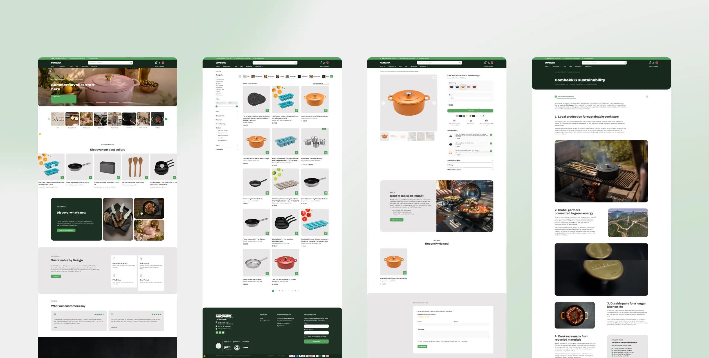
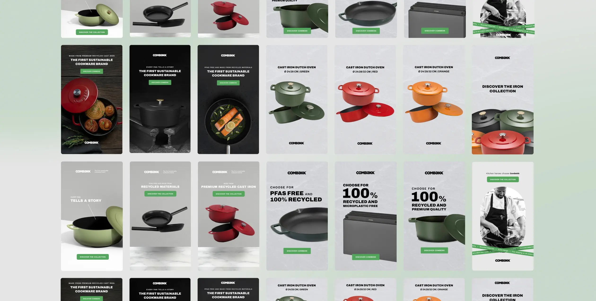

Webshop & social, 2025–2026
Combekk
Een compleet redesign van de webshop, plus de social advertenties die ernaartoe leiden. De vraag door alles heen: hoeveel stappen heeft iemand nodig van binnenkomst tot bestelling, en heeft hij op elk van die stappen genoeg vertrouwen om door te gaan?
- RolWebshopontwerp en social advertenties
- Jaar2025–2026
- TypeE-commerce redesign en advertising


Aanpak
- Het bestelproces als vertrekpunt, niet als sluitstuk. Elke stap van binnenkomst tot afrekenen is nagelopen op de vraag of hij er wel hoeft te zijn.
- Social proof op de plekken waar iemand daadwerkelijk twijfelt: bij het product en in de aanloop naar de bestelling, niet alleen als blok reviews op de homepage.
- Bundels als cross-sell. Door aanvullende producten te tonen op het moment dat ze logisch zijn, blijft een pan geen losse aankoop.
- Filters die het assortiment echt terugbrengen tot een keuze, zodat een bezoeker niet door alles hoeft te scrollen om bij het juiste formaat te komen.
- De advertenties in dezelfde vormtaal als de webshop, zodat een klik geen stijlbreuk oplevert.
- Eén vast stramien voor die advertenties, zodat een nieuwe uiting een kwestie is van ander product of andere claim in plaats van een nieuw ontwerp.
Resultaat
Een webshop waarin de route naar een bestelling korter is en op elk punt wordt onderbouwd, en een advertentieset die daar in dezelfde taal naartoe leidt.
Volgende case
Eikmeester